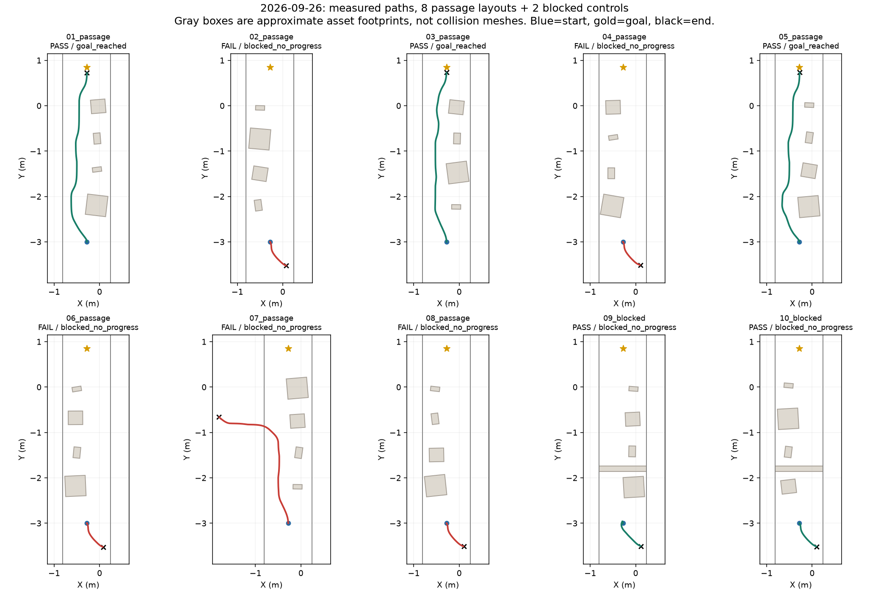
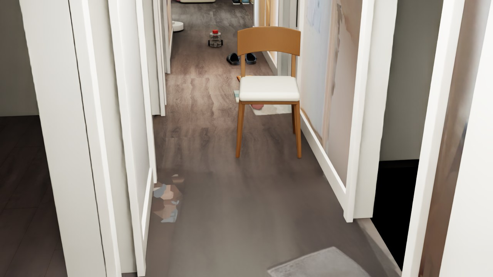
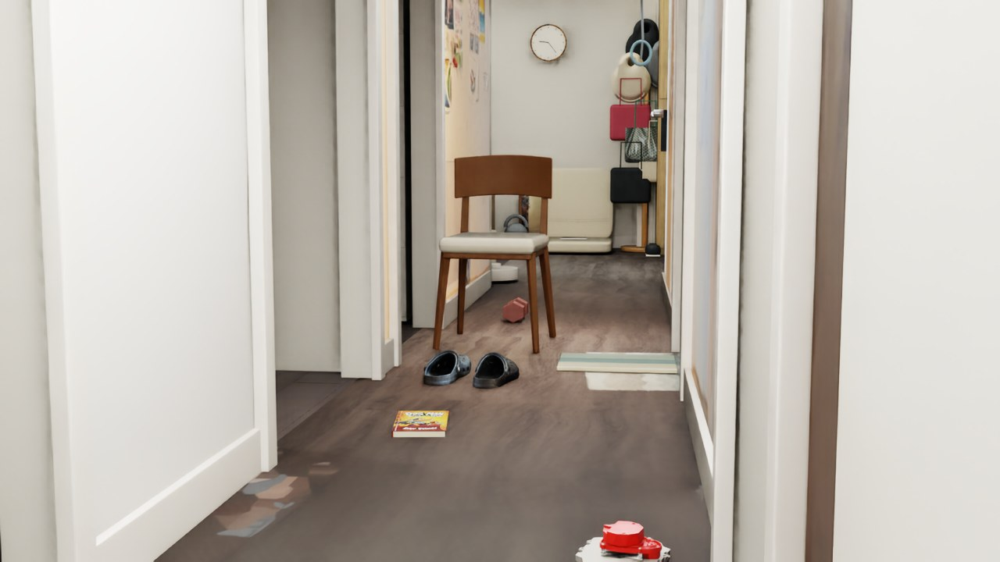
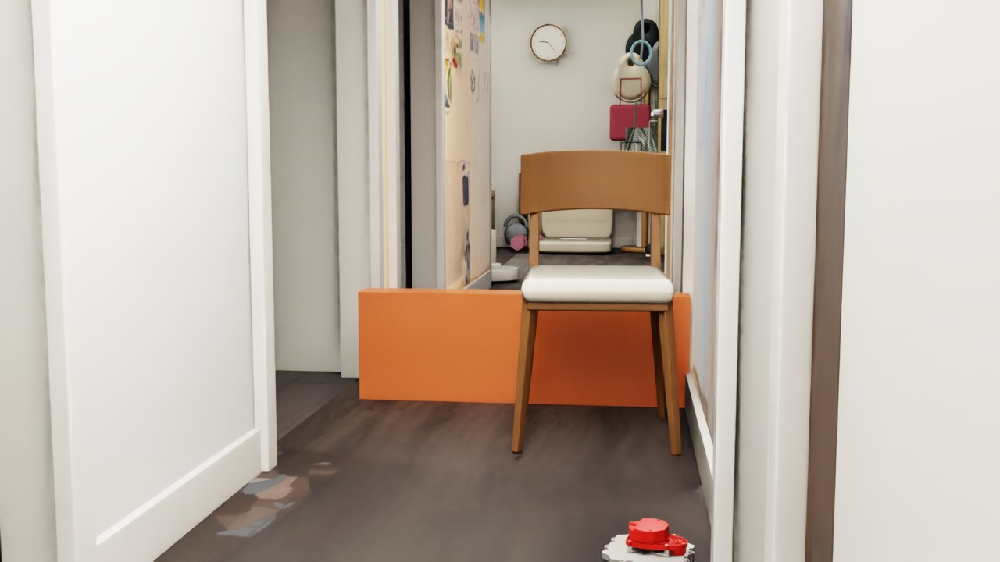
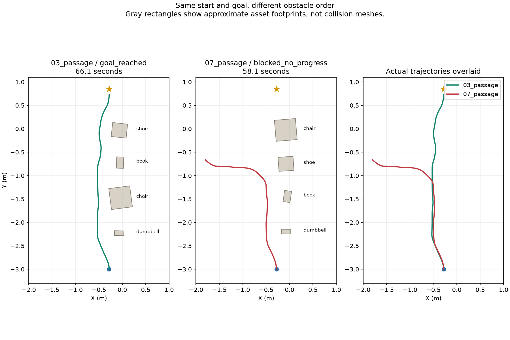
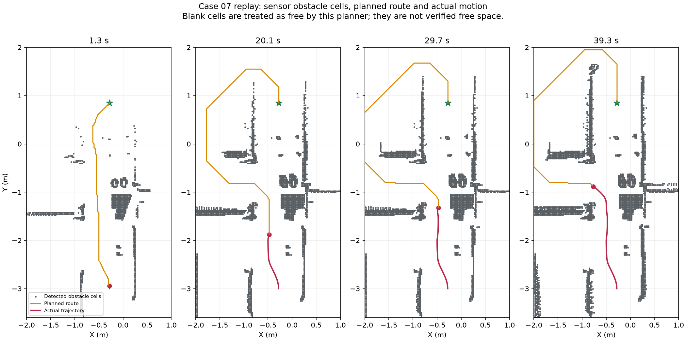
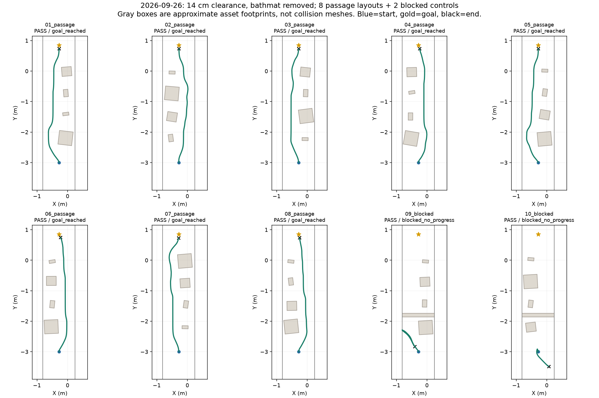

DEVLOG · 2026.09.26 · REPEATABLE NAVIGATION
Change the layout.
Can it still get through?
Starting from the initial 3/8 success baseline, I suspected the mat and clearance margin were changing route choices. Controlled checks led to all eight passage layouts reaching the goal. Jump to my observations and tests ↓
01 / TEST DESIGN
Vary the layout, keep control settings fixed.
Use seeds 2026092601–2026092610. Eight layouts alternate assets along either side, varying order, position and heading within ±10° while preserving a passage. Two controls add a corridor-spanning barrier to test stopping.
These are constrained left/right passage tests, not arbitrary positions and headings. Preparation corrected placement bounds to prevent wall intersections. Aborted preparation runs are excluded; no settings changed or failures were removed during the formal ten tests.
Keep depth + horizontal LiDAR, floor fitting, 2.5 cm grid and A*. Inflation radius: 17.5 cm; linear limit: 0.065 m/s; angular limit: 0.55 rad/s. Pose is ground truth, depth idealized and obstacles static.

Group I: Items are placed on the right side, with access to the left side.
02 / RESULTS
Report arrival and stopping separately.
Open passages: 3/8 reached the goal and met contact and braking criteria. Blocked controls: 2/2 met the specified stop criteria. Both blocked cases also planned behind the start before the no-progress stop. Meeting the stop rule does not prove correct blockage recognition; do not call these goal arrivals or combine all ten as navigation successes.
| Group | Type | Validation | Stop reason | Simulation time | Maximum contact-force component |
|---|---|---|---|---|---|
| 01_passage | Open passage | Pass | Goal reached | 67.1 s | 0.000 N |
| 02_passage | Open passage | Fail | Stopped: no progress | 18.3 s | 0.000 N |
| 03_passage | Open passage | Pass | Goal reached | 66.1 s | 0.000 N |
| 04_passage | Open passage | Fail | Stopped: no progress | 18.3 s | 0.000 N |
| 05_passage | Open passage | Pass | Goal reached | 67.9 s | 0.000 N |
| 06_passage | Open passage | Fail | Stopped: no progress | 18.3 s | 0.000 N |
| 07_passage | Open passage | Fail | Stopped: no progress | 58.1 s | 0.000 N |
| 08_passage | Open passage | Fail | Stopped: no progress | 18.3 s | 0.000 N |
| 09_blocked | Blocked control | Pass | Stopped: no progress | 19.3 s | 0.000 N |
| 10_blocked | Blocked control | Pass | Stopped: no progress | 18.3 s | 0.000 N |
Arrival requires < 12 cm goal error, sampled force components ≤ 0.1 N and braking travel < 3 cm. Blocked cases must stop before the barrier for no route or no progress. Limit each run to 100 seconds; stop after 18 seconds without sufficient improvement. Zero samples are not a continuous safety proof.
03 / RECORDING
Ten complete videos, including failures.

Ten measured paths: blue start, gold star goal, black cross endpoint. Gray boxes indicate approximate asset footprints.
Each case includes PASS/FAIL and a stop reason. Capture at about 5 Hz, encode at 25 fps by simulation time, and hold the final frame for about one second.
Open full recording ↗
Case 1 endpoint: goal reached.

The second set of failures: robots move to the back of the starting point and eventually stop because of the lack of improvement in the target distance.
04 / WHAT WE LEARNED
One successful run does not establish reliability.
Case 2 initially approached the goal, then drove behind the start and stopped for no progress without detected contact. Investigate mapping and route choice; an unpushable shoe is not the explanation, and video alone does not identify a sensor parameter as the cause.
Case 7 also stopped beside the corridor at X ≈ −1.81 m. Unknown space was treated as traversable, old obstacle points persisted, and depth timestamps were not independently checked. Preserve this baseline; log maps, plans and floor-fit quality to isolate causes on the same seed.

Blocked controls use a separate barrier to make the route explicitly impassable.
05 / OBSERVER'S NOTES
Look at the trajectory, make the judgment, then test it with a comparison.
The initial 3/8 result prompted observation: case 2 turned back immediately, while case 7 took a side room near the chair despite resembling successful case 3. I proposed two tests: the mat might register as an obstacle, and 17.5 cm clearance might close a usable passage.

The third group succeeds, and the seventh group fails. The two sets of starting points and objectives are the same, with different order of items on the right side; the seventh group deviates from the corridor when approaching the chair.
Observation 1: the mat may block case 2.
The mat lay in the intended detour. Its 2.1 cm height exceeded the 1.2 cm depth threshold. Disable only that raised geometry in a case 2 copy, keeping seed, objects, goal and settings. The original turned back and stopped at 18.3 seconds; without the mat it arrived at 65.9 seconds without detected contact. This supports the mat hypothesis for that run. The pale floor texture remains.
Case 2 control: goal reached after removing the mat.
Open case 2 recording ↗Observation 2: 17.5 cm clearance was too conservative.
Case 7 still turned into the side room with the mat present. Logged plans showed deliberate leftward routing before the doorway. The horizontal robot radius is about 10.5 cm; 17.5 cm center clearance adds about 7 cm. At 29.7 seconds, the best corridor-only route offered about 15.2 cm center clearance, so the threshold excluded it.

Gray points are sensed obstacles, orange is the planned route and red is the actual path. The left turn came from planning, not uncontrolled wheels.
Change only minimum center clearance to 14 cm, keeping the mat and layout. Case 7 reaches the goal in 66.9 seconds without detected collision. This leaves about 3.5 cm beyond the horizontal bounding circle; it is a tested simulation setting, not a hardware recommendation.
Case 7 control: keep the mat and change only the minimum center clearance to 14 cm. The robot stays in the corridor and reaches the goal.
Open case 7 recording ↗Save the changes, repeat all ten layouts.
Remove the raised mat for subsequent scenes, save the 14 cm setting and rerun the same ten seeds. Passage arrival improves from 3/8 to 8/8; both blocked controls stop. All sampled forces meet the threshold. No-progress stopping does not establish dead-end understanding.

Saved-configuration results: 8/8 passage goals reached, 2/2 blocked cases stopped. The earlier 3/8 results and recordings remain above for comparison.
Updated results for all ten layouts · JSON · Download updated test scripts · GitHub Experimental Records
The planner treats unobserved space as traversable, so it previously tried a disconnected side room. These improved layout results do not solve room connectivity; that must be added to the navigation map.
06 / REPLAY
The results are saved with the script.
Ten-layout results JSON · Download Test Script · GitHub experiment notes and per-case trajectories
Save the scene and run through Script Editor in the local NavBot project. Scripts require existing scenes/assets, switch test scenes and overwrite same-named results. Run only one controller at a time; Play alone does not launch the test. Models are excluded.